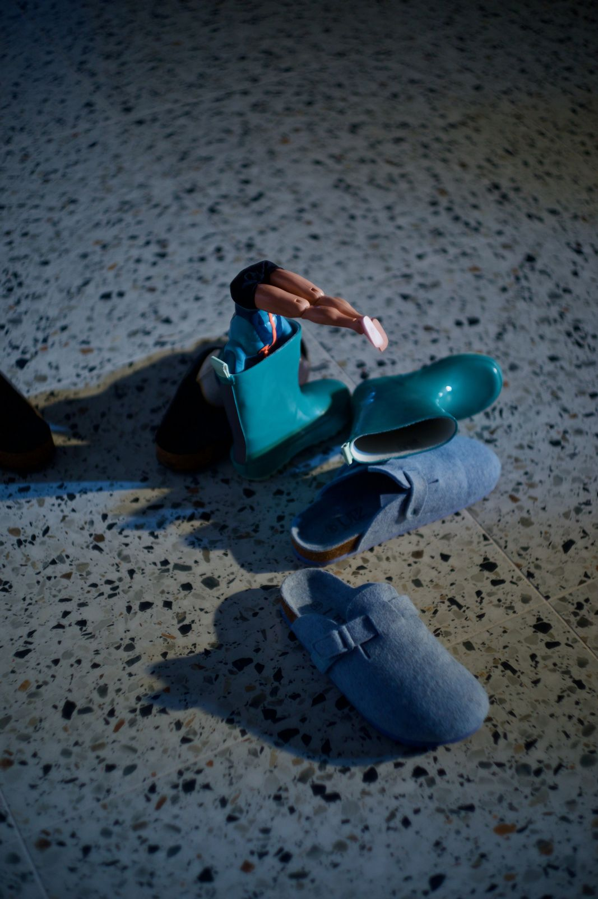
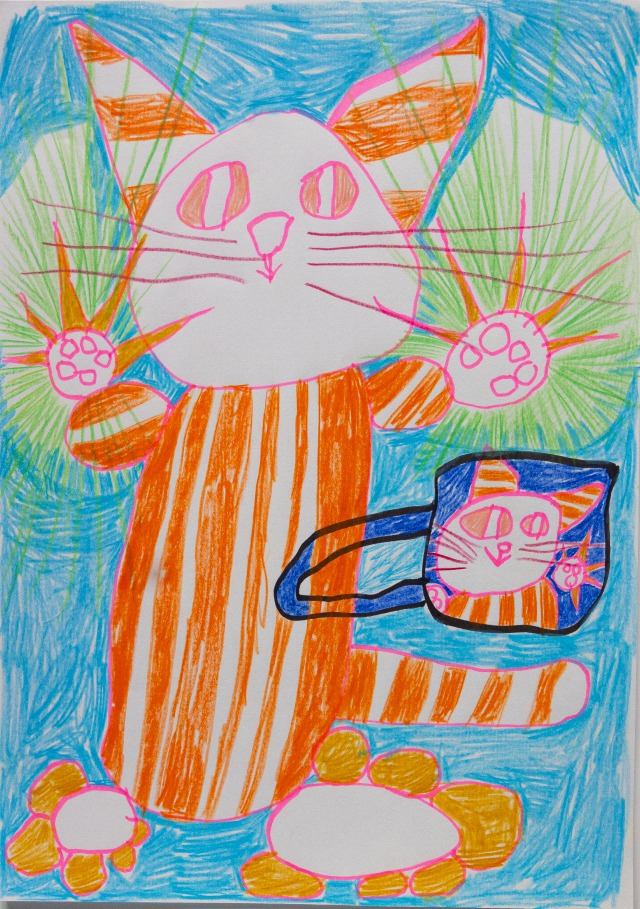
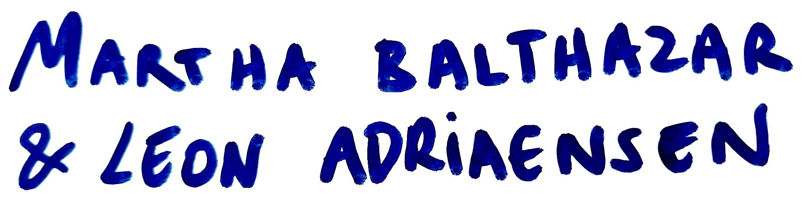
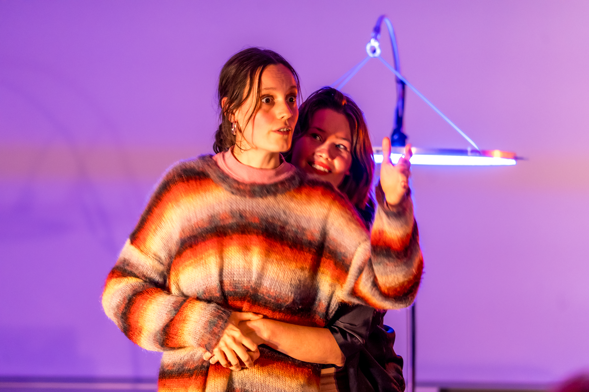
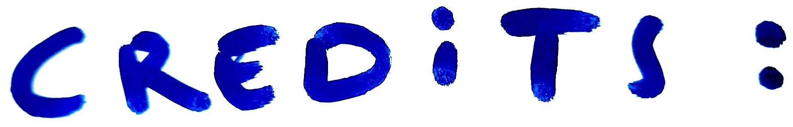
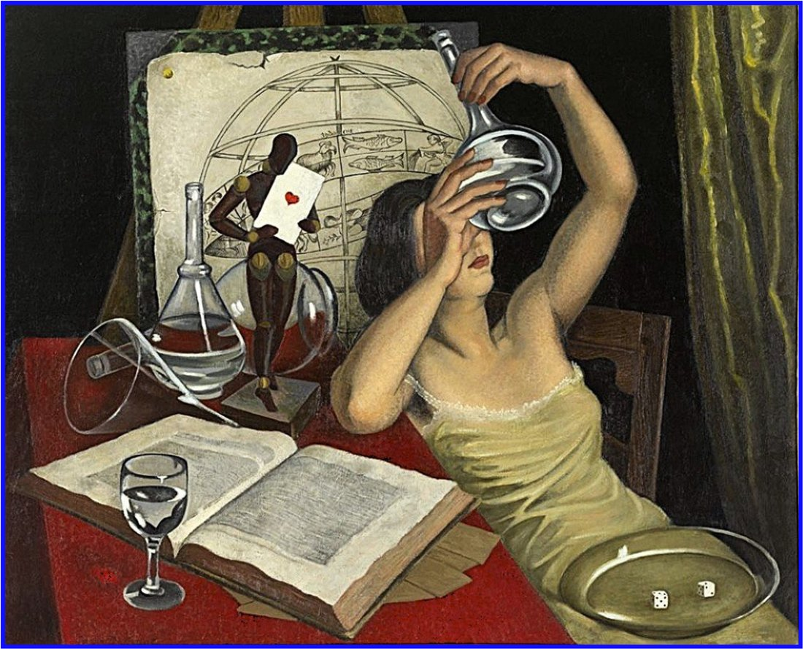

Een galactische keukentafeldialoog over sterren, kometen, en wat je moet geloven om in wetenschap te geloven.
A — Ik herinner me nog dat jij niet wist dat vallende sterren geen sterren zijn maar kometen en dat je kwaad op me was omdat je dat liever niet had geweten en dat ik dacht: maar dat maakt toch niet uit of het een komeet is of een ster.
T — Je kan nog steeds wensen, zei je
A — Je kan nog steeds wensen
Aha is een galactische keukentafeldialoog over de waarde en waanzin van het woord ‘waarom’. Over de wispelturige aard van wiskunde en wat je moet geloven om in wetenschap te geloven. Maar Aha is vooral een gesprek tussen geliefden, waarin kennis nog geen waarheid blijkt, en waarheid nog geen wijsheid. Met Barbara T’Jonck en Carine Van Bruggen aan weerszijden van het vraagstuk.
Aha is ontstaan vanuit een gesprek dat al jaren gaande is. Theatermaker Martha Balthazar en fysicus Leon Adriaensen, in hun vrije tijd geliefden, botsen aan de keukentafel wel vaker op hoe ze vanuit hun totaal verschillende disciplines de werkelijkheid bekijken en begrijpen.
In die voortdurende ontmoeting groeide het idee van een voorstelling die de dialoog tussen kunst en wetenschap onderzoekt, en daarmee ook de verhouding tussen wetenschap en samenleving.
Aha vertrekt niet vanuit spectaculaire wetenschappelijke resultaten, maar vanuit de discipline van het begrijpen zelf. Hoe komen we tot kennis? Welke rol spelen verbeelding, abstractie en twijfel in dat proces? Wat is ‘een feit’, wat is ‘de waarheid’?

Meer speeldata volgen binnenkort.


Posterbeeld — May Abnet
Foto’s — Bas Blaasse
Met dank aan — deAuteurs, TAZ, VUB, KVS & Transitie UGent
Deze voorstelling kwam tot stand mede dankzij de Caroline Pauwelsbeurs voor Verwondering, een initiatief van deAuteurs, TAZ, VUB & KVS.
